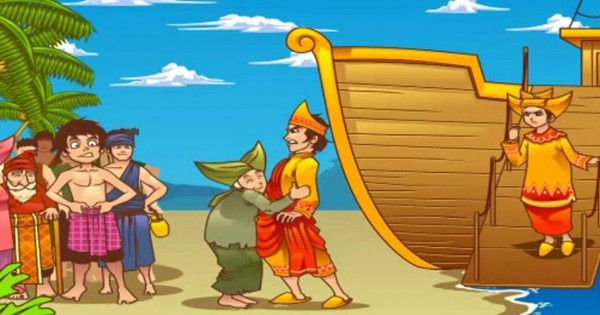

CERITA RAKYAT MALINGKUNDANG
Cerita singkat MALINGKUNDANG
Dahulu kala di Perkampungan Nelayan Pantai Air Manis, hiduplah seorang janda bernama Mande Rubayah dan anak laki-lakinya,
Malin Kundang. Mande Rubayah sangat menyayangi dan memanjakan Malin. Malin pun tumbuh jadi anak yang rajin dan penurut.
baca selengkapnya >>>>>>>>
CERITA RAKYAT SANGKURIANG
Cerita singkat SANGKURIANG
Dahulu kala, hiduplah seorang wanita cantik bernama Dayang Sumbi. Suatu hari,
dia sedang merajut. Tiba-tiba, alatnya jatuh dari rumahnya. Dia berdoa kepada Tuhan,
"Jika seorang pria mengambilnya, dia akan menjadi suami saya. Jika seorang wanita,
dia akan menjadi saudara perempuan saya".
baca selengkapnya >>>>>>>>
CERITA RAKYAT DANAU TOBA
Cerita singkat DANAU TOBA
Pada Suatu hari terdapat seorang pria bernama Toba yang sedang mencari ikan di sungai.
Suatu kali, kail si pemuda tersangkut pada seekor ikan mas, yang tiba-tiba berubah menjadi perempuan cantik.
Si pemuda pun memperistri perempuan tersebut. Dengan syarat, ia tidak boleh membeberkan asal-usul istrinya
kepada siapapun
baca selengkapnya >>>>>>>>